CityLog
Rediscovering the soul of the city — one hidden log at a time.
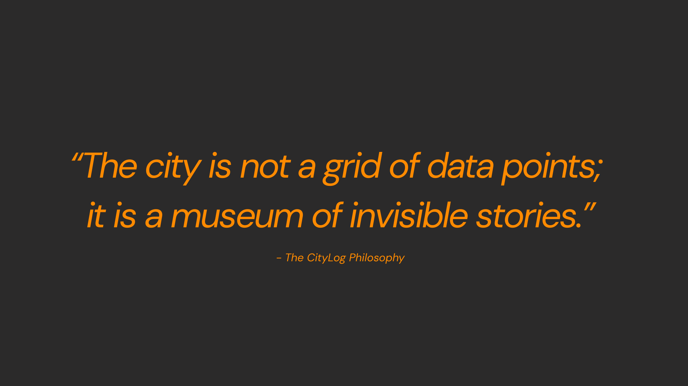
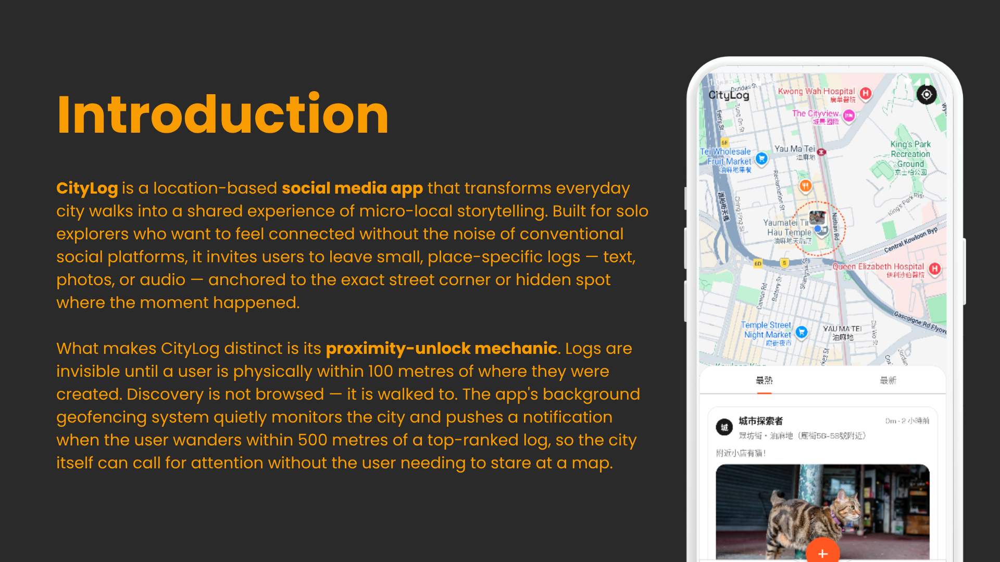
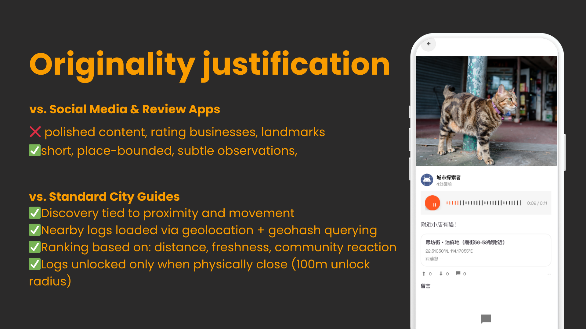
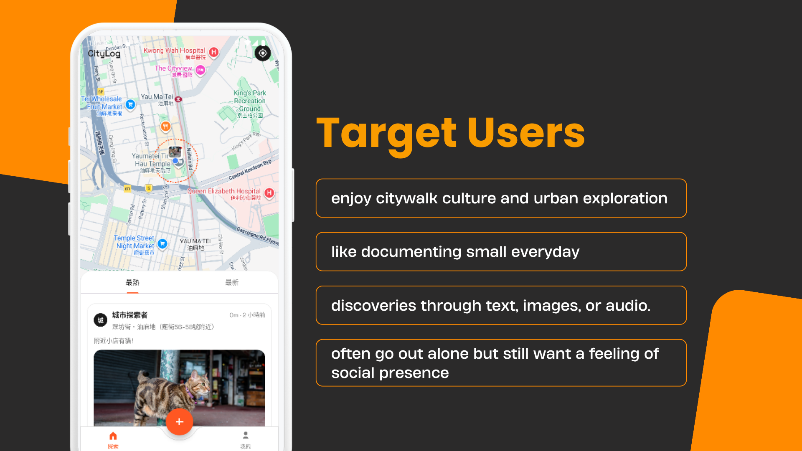
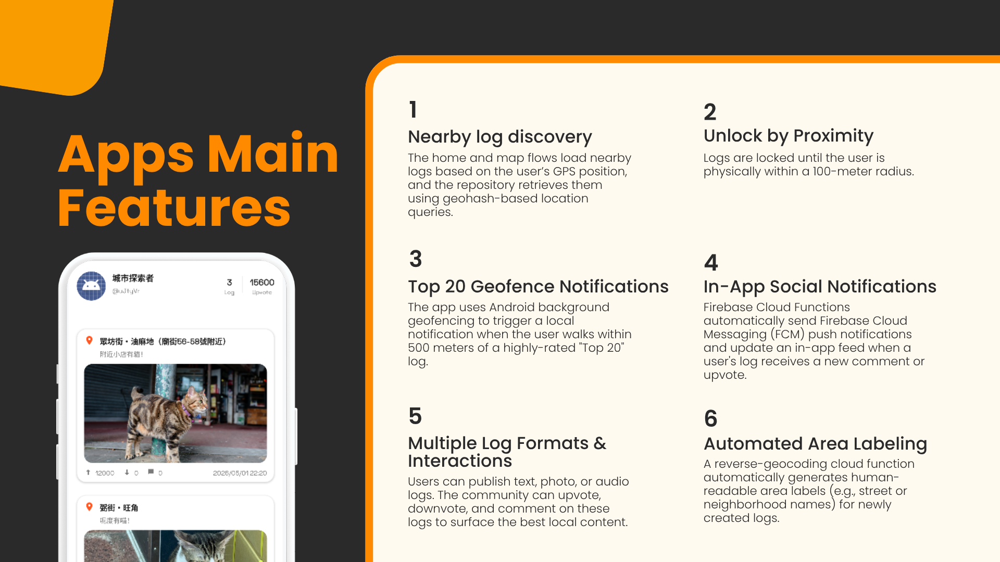
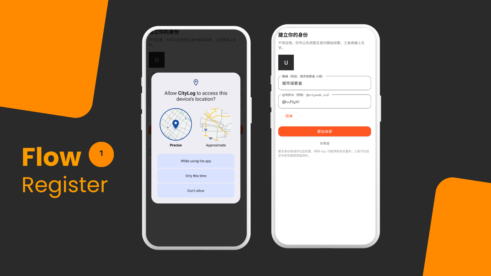
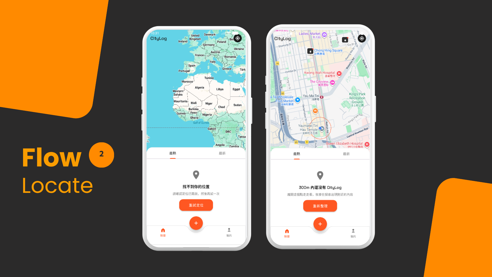
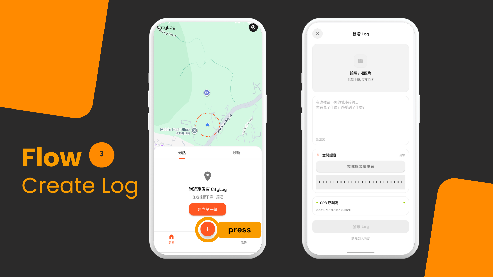
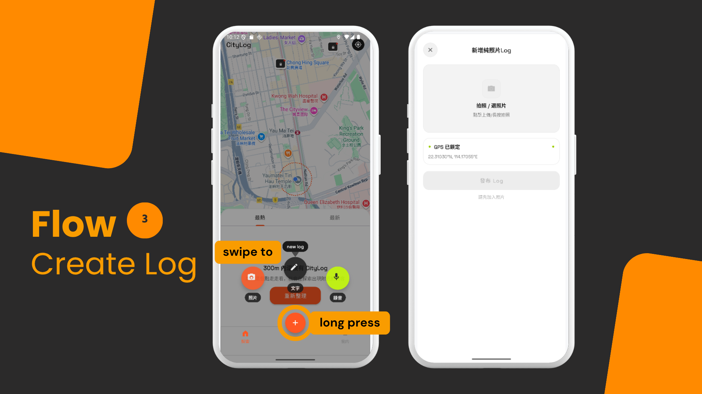
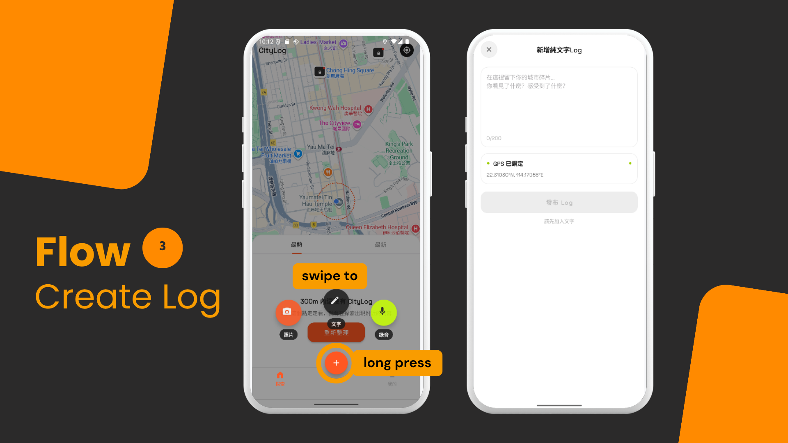
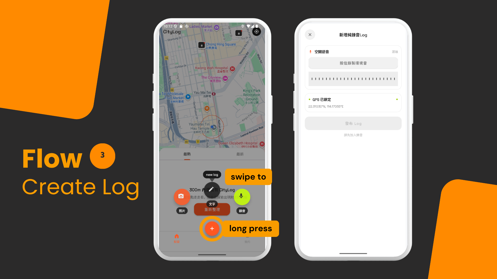
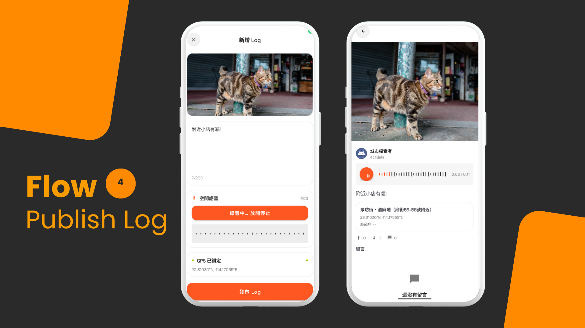
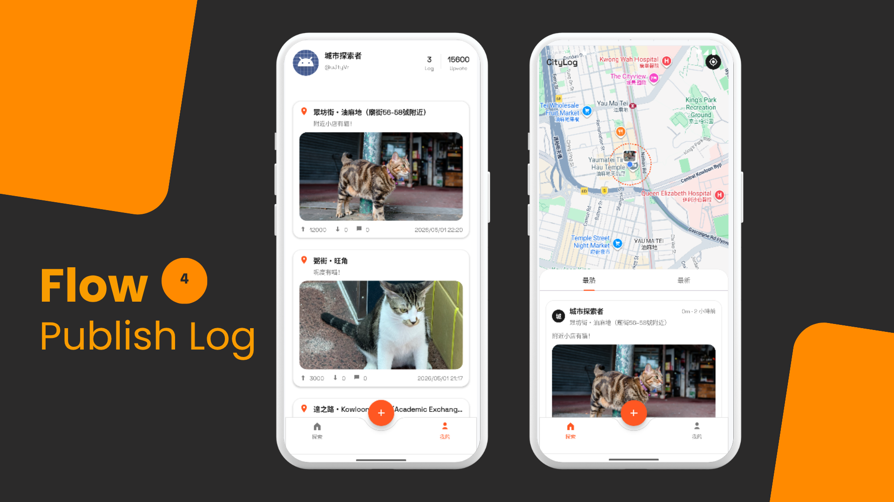
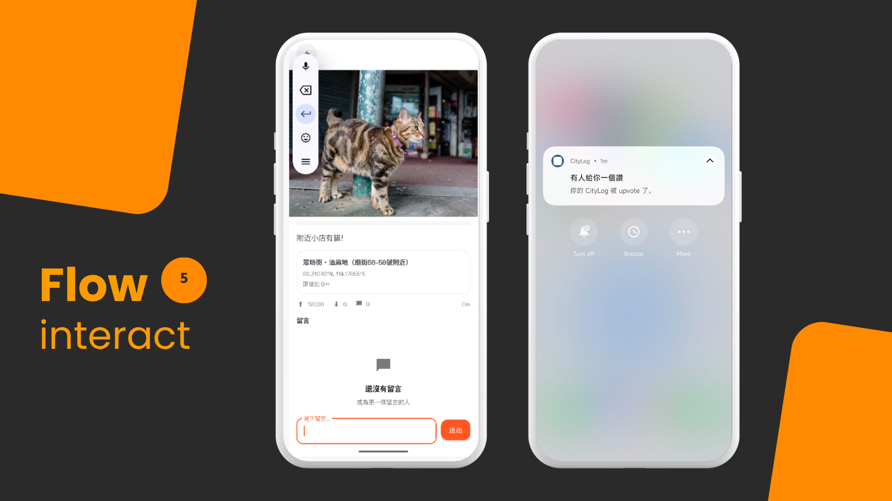
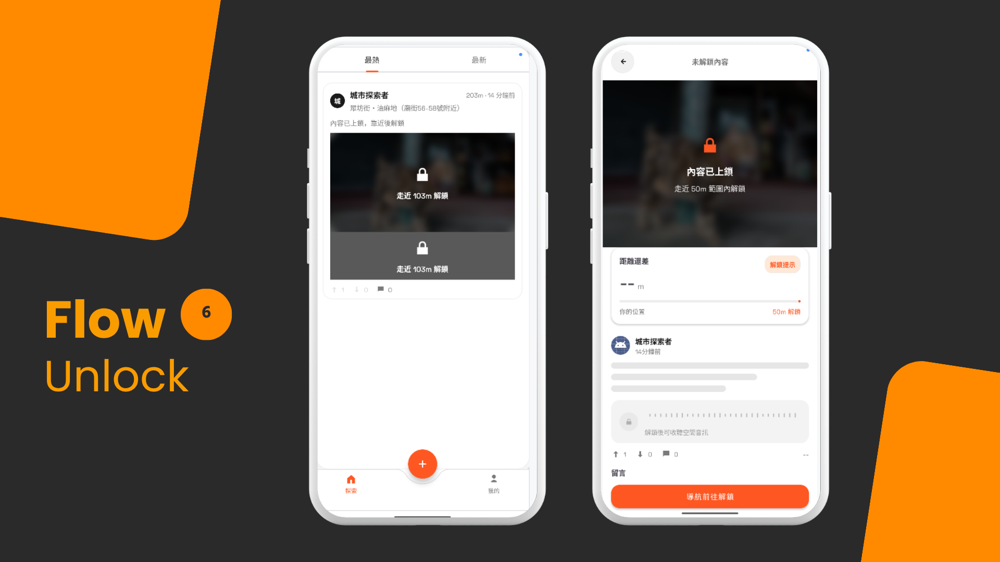
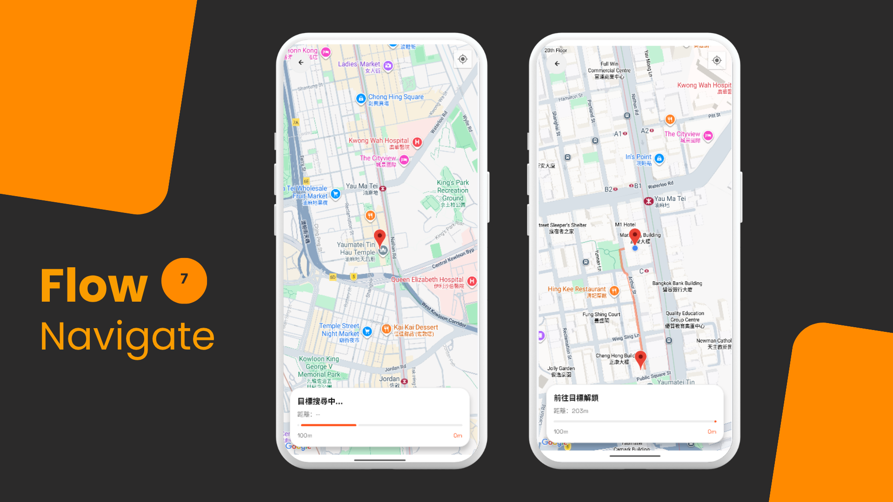
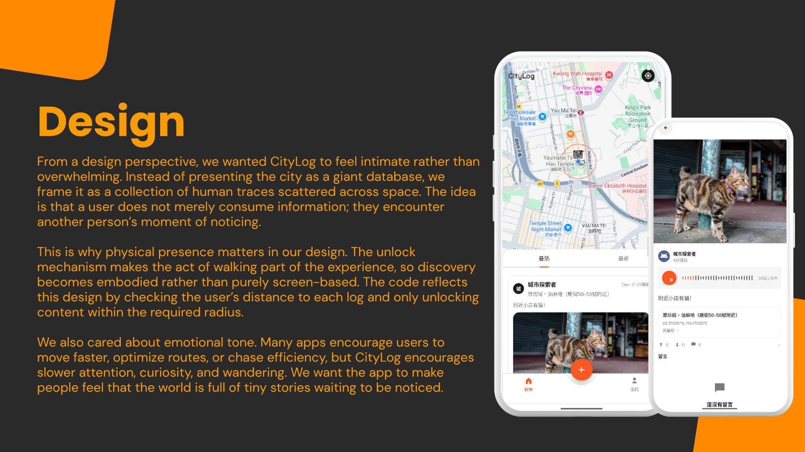
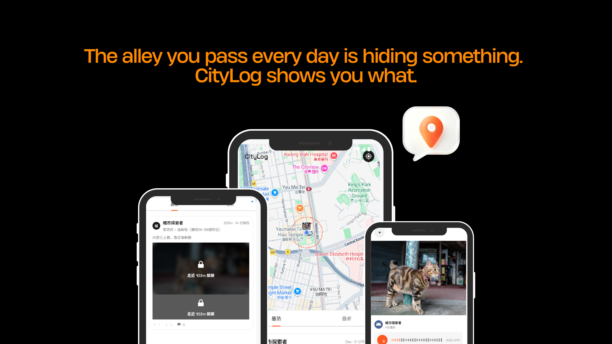
The Problem
Social media platforms like Instagram and Xiaohongshu are optimised for polished, broadcast-style content tied to landmarks and major attractions. They are not built for the kind of observation that makes city walking genuinely interesting — the quiet detail on a side street, the atmosphere of a specific corner at a specific time, the small discovery that is too subtle to post but too meaningful to forget.
Existing map-based review apps like Google Maps or OpenRice surface ratings and information, but strip away the human moment of noticing. They answer what is here, not what someone felt here.
The gap is not a lack of content — it is a lack of a format that treats place-bound, ephemeral observations as worth preserving. CityLog was built to fill that gap.
We also identified a secondary problem: solo city exploration can feel isolating. There is no existing tool that creates a sense of social presence through a physical space — the feeling that others have walked here and left something behind for you to find.
The Process
Concept & Differentiation
CityLog is not a review app, a city guide, or a conventional social feed. The core distinction is place-bound discovery tied to physical movement: content is anchored to GPS coordinates, hidden until a user is physically nearby, and ranked by a combination of distance, freshness, and community reaction — not follower count or algorithmic promotion.
The MVP was scoped to deliver this core loop end-to-end within a 3-week development cycle, using AI-assisted tooling to accelerate boilerplate generation while independently designing and implementing the backend architecture, data model, and system logic.
System Architecture
The app follows a strict MVVM pattern (Repository-ViewModel-Activity) with a complete Firebase backend, structured across three layers:
| Layer | Responsibility |
|---|---|
| Frontend | Android / Kotlin — 8 Activities, 3 Fragments, 8 ViewModels |
| Backend | Firestore, Firebase Storage, Cloud Functions (Node.js) |
| Communication | Repository pattern — no direct Firestore access from Views or Activities |
The Repository layer handles all data operations, enforced by Firestore Security Rules
that prevent any client-side write to sensitive aggregate fields (upvoteCount,
downvoteCount, commentCount).
Key Technical Decisions
Location Querying — Lat/Lng Range Filter vs Geohash
A naive proximity query using two-dimensional latitude/longitude range filters
(WHERE lat BETWEEN x AND y AND lng BETWEEN a AND b) cannot be expressed in
Firestore, which only supports single-field range queries per request.
- Geohash encoding converts a 2D coordinate into a 1D string where lexicographic proximity maps to geographic proximity — a 100-metre radius query becomes a set of string prefix ranges on a single indexed field
- Implemented using GeoFireUtils to compute query bounds, then applying Haversine distance filtering client-side to cull false positives at the edges of each geohash cell
- This approach supports Firestore's index model natively, without requiring a dedicated geospatial service
Vote Aggregates — Client Increment vs Cloud Function Recount
Maintaining accurate upvoteCount and downvoteCount on each log document
introduced a classic race condition: if two users vote simultaneously and both
read the same count before writing, one increment is lost.
- The initial approach used
FieldValue.increment()directly from the client — fast, but vulnerable to concurrent writes overwriting each other - Final implementation uses an event-driven Cloud Function (
onVoteWrite) that triggers on any write tologs/{logId}/votes/{userId}, performs a full recount from the votes subcollection, and writes authoritative totals back to the parent document - This is idempotent by design — even with Firebase's at-least-once delivery guarantee, re-running the function on the same vote document produces the correct result
- The UI applies optimistic updates via ViewModel LiveData for instant feedback,
with Firestore's
snapshotListenerreconciling the true value once the Cloud Function completes
Area Labelling — Manual Input vs Automated Reverse Geocoding
Requiring users to manually label the area of each log would create friction and
inconsistent naming. Instead, an onLogCreated Cloud Function automatically resolves
a human-readable area label on every new log.
- Calls the Google Maps Reverse Geocoding API with the log's lat/lng coordinates
- A priority-type parser walks through the response's
addressComponents, resolving to the most specific meaningful label (street name → neighbourhood → district), skipping useless values like standalone street numbers - The UI displays a loading placeholder immediately on log creation; the Firestore
snapshotListenerupdates the label once the function completes — no polling required
Background Geofencing — Notification Trigger Design
The app registers the top 20 highest-upvoted logs in the user's city as invisible
500-metre geofences using Android's GeofencingClient from Google Play Services.
- Requires both
FOREGROUND_LOCATIONandACCESS_BACKGROUND_LOCATIONpermissions to function reliably when the app is not in the foreground - A
PendingIntentfires toCityHotGeofenceReceiveronGEOFENCE_TRANSITION_ENTERevents - An
AppSessionFlagsthrottle (10-minute cooldown) prevents repeated API calls within the same session, avoiding Google Play Services rate limits and unnecessary battery drain
Security Model — Anonymous Auth for MVP Scope
The current implementation uses Firebase Anonymous Authentication exclusively — a deliberate MVP scoping decision, not a permanent design choice. Anonymous auth eliminates onboarding friction entirely while still providing a stable UID per device for Firestore Security Rules enforcement.
- Users can set a display name, handle, and generated colour avatar, stored locally and linked to their anonymous UID — creating a personal identity without requiring an account
- Firestore Rules use
request.auth.uidto enforce per-user vote uniqueness and prevent unauthorised writes - Google Sign-In, Apple Sign-In, and email authentication are scoped for the next development phase when resources allow
Project Structure at Completion
- 8 Activities, 3 Fragments, 8 ViewModels, 5 Repositories
- 5 Cloud Functions:
onVoteWrite(vote recount),onCommentWrite(comment count + owner notification),onLogCreated(reverse geocoding),getDailyTopLogs(ranking build), FCM token management - Firebase services used: Firestore, Storage, Cloud Functions, Cloud Messaging, Anonymous Auth
The Result
"The concept creates clear differentiation in a crowded social media market. " "You are the top group in the class that applied the most techniques in your app — almost full marks were achieved."
— Jacky Cheung, Lecturer, SM3607
Delivered as a fully functional Android MVP in 3 weeks, covering the complete user journey from anonymous onboarding through log creation, proximity-based discovery, social interaction, and physical postcard-style output via geofence notifications.
Key outcomes at submission:
- Ranked #1 in class for technical breadth across all project groups
- End-to-end location-aware architecture: geohash querying, 100-metre unlock radius, and 500-metre geofence notification zones — all functional
- 5 Cloud Functions handling vote aggregation, comment counts, reverse geocoding, daily ranking, and push notification delivery
- Full MVVM architecture across 8 Activities and 5 Repositories, with zero direct Firestore access from the UI layer
- Firestore Security Rules enforcing per-user vote uniqueness and protecting all server-side aggregate fields from client manipulation